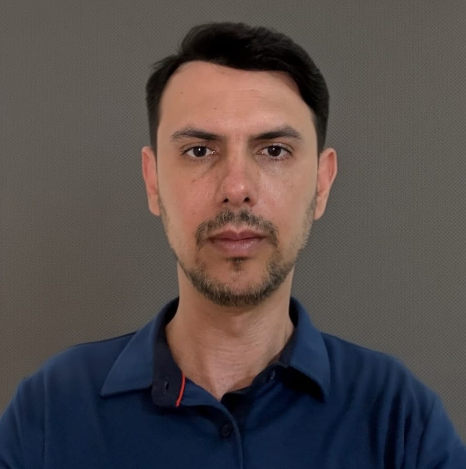

+10 anos resolvendo problemas reais, implantando sistemas e liderando operações
Profissional de Tecnologia da Informação com sólida experiência em análise de sistemas, implantação, suporte e integração de soluções corporativas, atuando diretamente com ERPs e processos de negócio. Ao longo da minha trajetória, participei de projetos voltados à melhoria contínua de sistemas, correções e integrações, além de suporte técnico a usuários e ambientes críticos, contribuindo para a estabilidade e eficiência operacional. Possuo conhecimento em desenvolvimento web, com estudos em tecnologias como HTML, CSS, JavaScript e bancos de dados, utilizados como apoio para melhor compreensão e evolução técnica na área de sistemas. Tenho como objetivo fortalecer minha atuação em análise de sistemas, contribuindo com soluções eficientes e alinhadas às necessidades do negócio. Aberto a oportunidades.
Implantação e Integração de sistemas
Otimização de chamados
Alta disponibilidade
Mar 2025 – Jan 2026 | Ribeirão Preto - SP
Liderança e execução de projetos, Gestão e controle orçamentário, implantação e integração de sistemas e suporte técnico.
Abr 2024 – Mar 2025 | Ribeirão Preto - SP
Garantir serviços críticos operando dentro dos SLAs e metas corporativas, Implantação e integração de sistemas, suporte técnico, ERP de transporte (Praxio/Globus) e monitoramento.
Jan 2023 – Mar 2024 | Luiz Antônio - SP
Atuação com TOTVS Logix e RM, Sisma, GAtec, Solinftec e Olivério.
Fev 2015 – Jan 2023
Implantação de sistemas, suporte técnico e ERP transporte.
Mar 2013 – Jan 2015
Nov 2011 – Out 2012
Dez 2007 – Out 2011
Fev 2006 – Fev 2007
Mar 2004 – Dez 2005